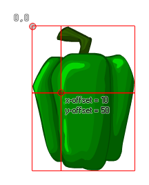

sprite_set_offset(ind, xoff, yoff);
Argument La description ind L'index du sprite pour changer le décalage de. xoff La position x de l'origine. yoff La position y de l'origine.
N/A
Cette fonction peut être utilisée pour définir l'origine x et y d'une image-objet et prend des valeurs relatives en fonction de la position (0,0) située dans le coin supérieur gauche de l'image-objet. L'image suivante illustre ceci: 
REMARQUE: Cette fonction affecte la ressource de l'image-objet , de sorte que toutes les occurrences ultérieures avec cette image-objet auront le même décalage.
sprite_assign(spr_Custom, spr_Base);
sprite_set_offset(spr_Custom, sprite_get_xoffset(spr_Base),
sprite_get_yoffset(spr_Base));
Le code ci-dessus affecte le sprite indexé dans "spr_Base" au sprite indexé dans "spr_Custom", puis utilise les valeurs de décalage x et y de "spr_Base" pour définir l'origine du nouveau sprite.